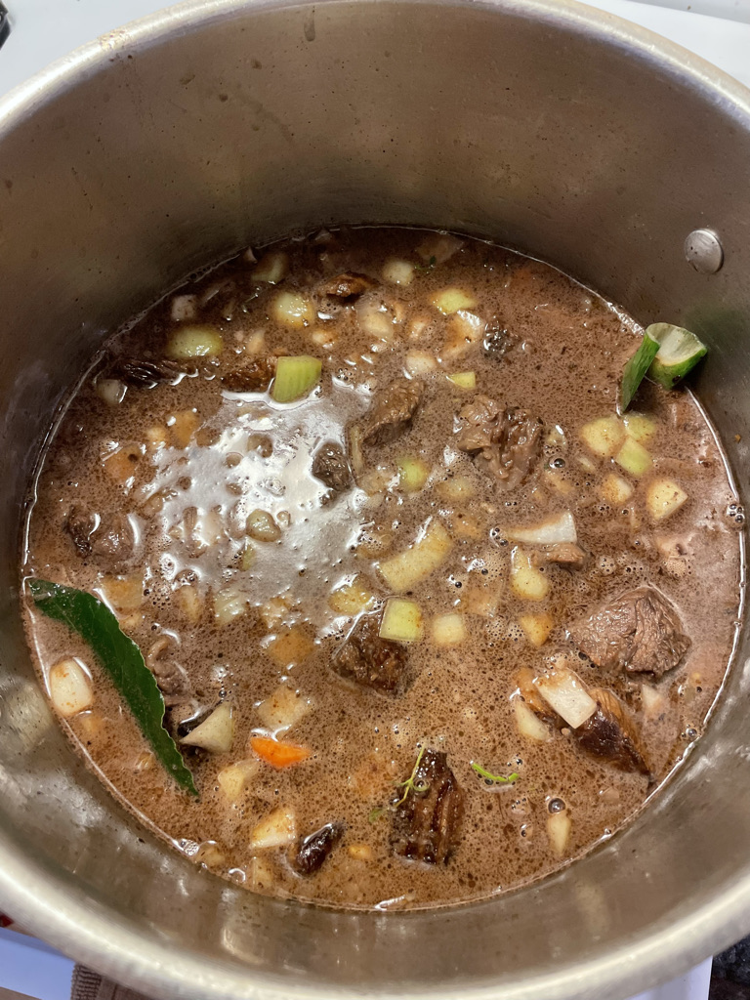
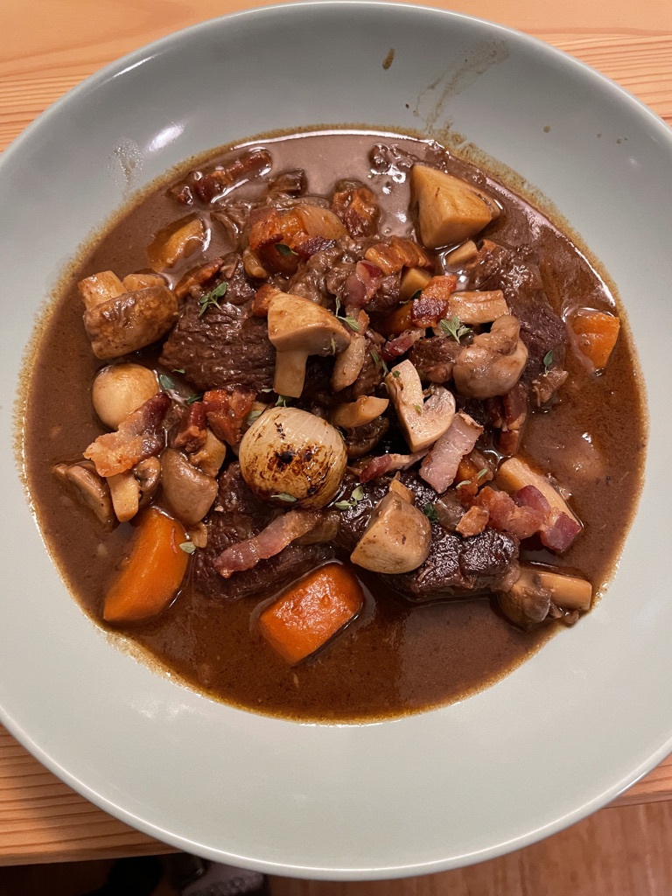

Beef Bourguignon

Description
A classic French dish.
Ingredients
- 1.5 to 2kg low cuts of Beef: Shin and Chuck
- 1 bottle of wine, 75cl. Ideally something robust.
- 1.5 liter of organic beef broth / beef stock
- 2 medium sized carrots.
- 2 medium sized onions
- 400 g thick-cut bacon cut into small pieces
- 400 g button mushrooms. Smaller are more suited.
- 20-30 pearl onions (about 300g)
- 2 tsp sugar
- Seasoning to taste.
- 1 tbsp AP flour or 1 tbsp cornstarch, diluted in half a glass of cold water.
(if you want it creamier and a little thicker you can use 2 tbsp)
- Tomato puree : 2 tsp.
- Bunch of herbs:
- 4 sprigs of Thyme
- 2-3 Bay leaves
- 1 Green part of leek
- 1 Celery stalk
- 5 garlic cloves
Steps
Marination
- Cut meat into 2-3 inch pieces. They shrink a bit during cooking.
- Add onions, carrots and the meat to a big container.
- Drop the wine. All of it. Keep a glass for yourself, you deserve it.
- Let this marinate in the fridge for 1 hour. I did it at room temperature because my studio is pretty cold.
The Stew
- Strain the meat, pat it dry, Season with kosher salt
- Sear the meat in oil until nicely coloured on both sides.
- Discard the oil.
- Sprinkle with a heaped tbsp of flour. Thickener.
- Cook for a minute, stirring. Then drop the wine and the stock.
- 2 tsp of tomato purée for umami and colour.
- Flambé safely: Don’t put your head over it, don’t do it under the kitchen hood, keep your distances.
- Bring to a boil, skim the scum regularly.
- Two cooking options:
- The Oven: 2 hours at 200°C or 400°F then a little check, then again 2 hours at 200°C
- The Stove: Low heat, 4 hours the first three with a lid.
- In both cases, the meat should be super soft and tender. If not, keep cooking.
Garnishes
- Cook all three garnishes during the last hour of the stew.
- Place all peeled pearl onions in a pan.
- Add a knob of butter, 2 tsp sugar , water till they are halfway covered
- Top with a lid or with a piece of parchment paper, with a hole in the center.
- About 10-15 minutes will cook and caramelise them.
- When the water is gone, they should be ready (prick with a knife to see if it’s soft). If not, add water and continue. If yes, Set aside
- Cut bacon into sticks ; 1inch long1/4inch wide (lardons), Fry them on medium heat until caramelisation appears.
- Remove fat (keep for cooking your next omelet). Set aside.
- Cut mushrooms into quarters, halves or leave whole if they are small.
- Place them in a pan covered with a bit of beef stock. 5 minutes is all they need.
Finish
- Add ¾ of the garnishes to the stew, one piece of dark chocolate and cook together for 30 minutes.
- Top plates with a little more garnishes and some fresh thyme.
- Sauce should be glossy. If not you can always drop in a few knobs of cold butter off the heat, and swirl around until melted.